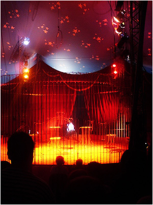

| |
 |
 |
| |
 |
Ден 7 |
|
| |
|
|
Ален Корбин, детектив:
Последната вечер, дел од сцената букнува во пламен по неуспешниот обид на Џуџето да го тргне бурето барут од Пиро Пламенофрлачот кој моментално е на интензивна нега заради тешки изгореници на главата. Интересно, Мудрите Јарци први се стрчуваат да му помогнат на несреќниот Пиро, на очигледно незадоволство на Џуџето (познато е веќе дека претходно тоа на Јарците им дало книшка „Јарец на 1001 начин“). Тука откриваме: кој е всушност Партизанот; кои се границите на Децата од Гума; и конечно, каква е врската меѓу Допелгангер и Снегорог. Мудрите Јарци се опуштени и по краткиот говор самите излегуваат од сцена. Останува загатката: каде фигурира сонцето на Допелгангер во мрежата на референци што јарците ја расплетуваат? Ради нивните зборови е раскопана основата на циркуската сцена, но не е најдено ништо освен земја. Дали тоа значи дека нештата што тие ги кажуваат треба да се сфатат во преносна смисла или пак дека едноставно не треба да се сфаќаат воопшто сериозно?
КЛОВНОТ: Дами и господа, иако непланирано – тоа сепак беше несреќен случај, а не подметнат пожар ко што некои од вас, така гладни за спектакл, сигурно ќе си кажат – веќе ги видовте за момент, два или пет, таман колку да станат однапред и одназад... ууух... херои на вечерта – ви ги претставувам единствените, неповторливите, Мудри Јарци! (аплауз)
ДЕСНИОТ ЈАРЕЦ: Отварам очи за да можам да видам и низ мрежата на пајакот и низ сивилото на гумата. (аплауз, се слуша: Види, се познаваат конците... Не, бе...) Она што го видовте пред десетина минути ве прави сведоци на обид за пеглање набори во нечиј оклоп. Скептицизмост е честитост на интелектот, се вели: нурнете во маската на Кловнот што како оклоп ја брани темницата под себе и се ќе ви стане јасно...
ЛЕВИОТ ЈАРЕЦ: Само, за жал, нема уште многу време за појаснувања и разјаснувања... Блиску сме до крајот, вртлогот на заборавот забрзува со сето она што доброволно го фрламе-фрлате-фрлаат во неговата матна вода. (продолжено ракоплескање) Блее-хех, и ние ќе скокнеме во него набрзо, ама не жалете. Каде и да не води патот, тоа ќе биде место многу поубаво и полудо од ова техниколор белило...
Д.Ј.: „А каде одите?“ ќе праша некој, и тоа е фино, прецизно прашање. Погледнете во земјата пред нас, во оној цртеж од сонце. Истото, како негово огледало, можете да го видите и на врвот од шаторот, таму каде што тешката пластика завршува во инка. Не можете да го помешате тоа сонце со ниедно друго – има очи, нос и уста извиена во блага насмевка. Тоа е едно симпатично сонце, би можело да се каже, но погледнете поубаво... Тие црти... Сте го сретнале ли тој израз некогаш на некое друго место?
Л.Ј.: Кловнот вели дека тоа е лицето на Прлигор Вилег, основачот на овој циркус, и од неговите зборови е изведена приказната дека духот на г-н Вилег и ден денес опстојува наоколу, по завесите и трибините на шаторов... дека сонцето сред сцената оживува навечер, дека голта несреќни циркузанти и залутани деца, а дека ги исплукува нивните непреџвакани духови за и тие потоа да ги прогонуваат градовите и селата, плоштадите и пустините низ кои циркусот има поминато... (смеа во публиката, се слуша: Не сфаќам што е тука смешно...)
Д.Ј.: Ако сте присуствувале на нашата точка во текот на оваа недела, тогаш веќе знаете за исчезнувањата на Самовилата и Топовското Бркле... Наводно, г-н Вилег ги голтнал токму тука (белешка од Ален Корбин: Десниот Јарец застанува врз сонцето), расчепувајќи ја лутата беззаба уста, шмукајќи ги нашите сакани надолу, кон стерилноста на непознатото подземје... И според сите докази, сите тие раскажувања и прераскажувања се веројатно точни... со тоа што сонцето не е баш г-н Вилег како што се зборува, туку нешто друго, нешто – неименливо...
Л.Ј.: Ха-ха-ха-блеее... (шум во публиката) Ха-ха... А ние треба да скокнеме право во срцето на неименливото, која урбановселенска журка, Хамлет да ни позавиди! И зошто? Затоа што Гатачката тврди дека немаме избор... Аах, непријатно, непријатно... Ама ете... Децата од Гума, од друга страна, плачат затоа што биле болни... Секој по нешто...
|
 |
Д.Ј.: Да, да, Ѓаволестиот Микроглушец конечно отворил муцка во растегливите пори на децата... Микроглушецот, знаете, е честа болест на кожата што се појавува меѓу превиткувачите и гумените луѓе, и секако, тоа не е воопшто глушец туку тип на паразит што прави кожата да се стврдне до скаменување ако човекот е студен или да смекне до стечнување ако човек е премногу напален. Со лутината што децата ја носат во себе, за саат или два ќе станат вирче, хех... „Кажете им на другите, кх-кх, дека бевме големи луѓе, бегај бе, не се тегави врз мене!“ ќе каже едно од нив, заплеткано во екстремитетите на другите деца. Не дека е тоа смешно, само иронично. Мислев дека ние треба први да настрадаме...
Л.Ј.: Пред Децата од Гума, во Допелгангер престојувал Мелвин, американски превиткувач што можело да го собере во стандарден кофер, а во слободно време пишувал пејсажна научна фантастика што никому никогаш не ја покажал – тој исто така го закачил Микроглушецот, но никој не знаел за тоа додека едно утро Камшикарот не го нашол целосно скаменет. Во тестаментот што Мелвин го оставил зад себе – и тоа е се што оставил, ни трага ни глас од неговите СФ трудови – барал неговото тело да биде оставено како скулптура во некоја од германските шуми...
Д.Ј.: ...Одговор на Кловнот: „Добро поминатиот ден носи среќен сон, добро поминатиот живот носи среќна смрт. Жал ми е, Мелвин, ти беше неинтерсен изведувач и хронична флегма, подлабоко навлезен во твоите непостоечки написи отколку во другите околу тебе. Твое си е, ќе те продадеме во Полска на пазарот за ѓубриња и глупости.“ Тоа рекол – тоа направил, па така, сред Варшава, Кловнот го продал Мелвин, а не купил нас... (шепот во публиката)
Л.Ј.: Така, тоа што денес не гледате тука се должи делумно на нечија несреќа, а делумно на суровата баналност на Кловнот, блее-хех... (шепот во публиката)
Д.Ј.: Што значи тоа за Децата од Гума? Дека ќе ги шитнеме во фабрика за мастики каде ќе им додадат вкус на ванила/ментол додека Кловнот се шета по околните пазари, во потрага по новото големо откритие – Детето Пајак? Којзнае, можеби сите тие игри и закачки во името на Кловнот ќе им се исплатат, па од него ќе се појави магичен лек против Микроглушецот...
Л.Ј.: И некој ќе не праша, „Кои сте па вие да зборите така лошо за тие три убави дечиња? Што сте постигнале, освен што сте го избегнале месарскиот сатар?“ Па... Ние сме јарци во циркус, што можеме да постигнеме? Да станеме легендарни јарци во циркус? Нашата точка да стане такво совршенство на животински говор што секој јарец, секоја коза и секоја овца на светот што живурка во циркус би се споредувала со нас, „Би сакал/а да сум мегајаре како нив“? Животинскиот говор инаку спаѓа во категорија на стомакозборство што не ни прилега, баш, но каде секако ќе не стрпаат за 5-10 години од сега, чисто колку да знаете...
Д.Ј.: На крајот на краиштата, што и да кажеме, што и да постигнеме, нема никогаш да бидеме вреднувани на исто скалило со оние три препредени деца што во моментов лежакаат уплакано зад сцената. Тие се „луѓе“, ние сме „животни“, крај... (се слуша: Се разжести десниов јарец...)
Л.Ј.: Барем во рамките на оваа сцена и на овој шатор тоа е така. Надвор, можеби и ќе се случи некое чудо, некаков мистичен блесок на спознание, па некој од другите циркуски шефови ќе посака да не откупи, да не посвои, да не здоми, да не сака како што Кловнот и Допелгангер никогаш не можеле; и веројатно ако дојде до тоа, секоја нишка разум и мудрост околу нас ќе не види во своите проекции како подрипнуваме од среќа и инстантно фаќаме џаде по патот со облаците. (смешкање во публиката)
|
|  |
Д.Ј.: Но, секако, наивно е да се претпостави дека само затоа што не сме вреднувани во Допелгангер ние нему не му припаѓаме со дух и тело. Колку и да се сомневаме во средината и лицата околу нас, колку и да ги презираме нивните постапки, не можеме да ги отфрлиме како бајат јогурт без да ги распрашаме нашите чувства и надежи. Кој ќе ги потсетува луѓето на Самовилата ако ние не сме тука?
Л.Ј.: Уште побитно, кој ќе скока во устата на сонцето секој пат кога Децата од Гума ќе ја фрлат Самовилата во неа? Порано или покасно, Самовилата ќе се врати меѓу нас; а кога тоа ќе се случи овие завеси и овие циркузанти повторно ќе светнат со нејзината често незабележлива, но секогаш присутна љубов!
Д.Ј.: Секако дека ќе има завидливи бабароги и змии на кои ништо од тоа нема да им се допаѓа, но ете, како што Микроглушецот ги закачи Децата од Гума, така и до секоја од нив правовремено ќе долетаат по две-три стрели со отровен вресок, „Те сакаме до срж!“ Вчера ви кажавме дека Партизанот, вистинскиот Партизан е всушност одамна мртов во некој ендек, и дека оној човек што во моментов се смее од трибина и одмавнува со глава е само уште еден маскиран лажго како и сите други. Не ви кажавме, на негово очигледно задоволство, штом има толку храброст да се појави денес меѓу нас, кој е тој навистина. Хех... Зарем не е очигледно? Не-ли-е-очигледно?! Погледнете го како се поти, како кожата на неговото лице се опушта во набори на сало како уште еден дебел бизнисмен што сака да тера по свое и каде може и каде не може – особено каде не може и не смее, затоа што таму пазарот е поинтересен. Ѕирнете во неговиот кофер и прочитајте ги неговите документи... Сите тие валкани пари што се шетаат од џеб во уста во стомак во гаќи и повторно завршуваат во нечиј скап-прескап џеб. Блеех: и тој џеб е веројатно негов, само се води под туѓо име. Не е ли очигледно дека онаа подвижна лага со петокрака е никој друг туку Снегорог? Погледнете го! Лика и прилика, само без неговата маска... или поточно, со нова маска врз старата! (галама во публиката, се слуша гласот на Партизанот: Браво, Јарци, браво, само напред и пожестоко!) Погледнете го, гледачи мили, циркузанти мили! Снегорог, киклоп-минотаурот што голта се пред себе, аморфниот мускул и вкоренетата болест на Децата од Гума, чудовиштето што час позира како Партизан, час како дебела жена со нож за Самовилата, час како Батка-свиња со лекција за нас! (силен аплауз на публиката, глас од Партизанот: ...Како Батка-свиња с-со... Хах-ах-бха... Тоа е добро, тоа е добро! Ха-хах!)
Л.Ј.: Ама не се секирај, Партизанче мое мило белокрило. Ако другите не можат да видат подалеку од своите муцки и џиџи-миџи, Каубоецот и Брус Ли и тоа како можат. Што дека се чини на прв поглед дека не се мирисаат многу меѓу себе? Каубоецот никогаш нема отворено да го предизвика Брус Ли на двобој и обратно – зошто некој би се спукал со својот најдобар пријател? Со кого мислиш дека Каубоецот игра карти кога не пука во конзерви – со неговиот булдог? Како Брус Ли ќе остане силен и виток ако не се трка со Каубоецот? (засилен аплауз на публиката, се слуша: Абе овие ко за на избори се...)
Д.Ј.: Само уште Кловнот да се свести дека сме навлезени фино во третиот милениум и да ги покани Каубоецот и Брус Ли за стално – како партнери („чистка“ ќе добие многу попозитивно значење од ова сега, може и да се кладиме)! Ќе му треба уште некое време на Кловнот за да го комплетира тој чекор, старинскиот концепт за циркус со поглавица се уште му врие во крв, ама ќе дојде до таму. Во меѓувреме, ќе видиме уште понекој бисер од него, како на пример, неговиот денешен дијалог со Мечката...
|
|
Л.Ј.: Дали како последица на вчерашната закачка со Каубоецот, дали затоа што Камшикарот е тажен и лока цела вечер и цело сабајле, или можеби затоа што денес е Допелгангер ден – Мечката реши да прооди! Што дека нема шепа, ако има дух нога? Се исправи така во кафезот, ја раскина металната конструкција ко за виц и за’рже кон ѕвездестиот коњ на Каубоецот. Се собраа уплашени луѓе околу неа (и ова не го разбирам, ако се уплашени и врескаат од страв, зошто воопшто одат кон неа?), но таа се смири веднаш, се извини за вулгарноста во дејството и брзо-брзо помогна да се состави нов кафез за неа. Некој ми кажа дека ветеринарите го сметаат ова за чудо што нема да трае и дека во најдобар случај, Допелгангер ќе добие само една весела, но се уште саката мечка. Циркуската психијатарка Албина Дидам додаде дека Мечката веќе извесно време се чувствувала ко да ги има сите потребни шепи и дека можеби еден добар синџир околу врат би и дошол добро, „Ама некој, баш она, да биде малку кинки, сепак, што покинки толку подобар како средство за... овај лек... ммм... да... хе-хе...“ И покрај сите проблеми на раце, Кловнот стигна да и честита на Мечката, „3 е подобро од 4, 2 е подобро од 3!“ Ова се вика економија во оптимизмот. (смеа во публиката)
Д.Ј.: Во меѓувреме, Кловнот го соопшти и неговиот избор за жртва кон Допелгангер... „Ако веќе мора да има жртва,“ спомна Кловнот на утринскиот состанок. „Јасно како ден е дека најбогат и највкусен плен за темперните богови е самата Гатачка! Со нејзината мудрост и уште повеќе, нејзиното блиско пријателство со далечната иднина и непоимливо мистериозните богови, сигурен сум дека кога ќе ја види неа Допелгангер ќе се израдува како пират пред полна цистерна рум. (смеа) Мњам-мњам, како да го слушам уште сега... А и има логика. Сепак, што е послатко од снагата на нашите пријатели, исцедена до бескрај во име на нашата супериорност? Не е ли тоа причина зошто комшиите секогаш се препукуваат? И освен тоа, на кого му треба Гатачка што носи само лоши вести...“
Л.Ј.: Секако, Гатачката ја нема никаде во моментов и не верувам дека ќе ја видиме пак пред целава галама со Допелгангер да се расчисти. Без разлика – таа веќе ни кажа се што требаше да ни каже, освен можеби зошто ја ословуваше кристалната кугла како син, но тоа е друга приказна. Се што ни останува нам е да се симнеме до утробата на сонцето и да ги отвориме сите врати што мора да се отворат, без разлика на цената... Мајлс ќе свири со солзи по црнечките образи, ние ќе премрежиме рогови за збогум и ќе се разделиме, шубидувап! во здивот, секој на својата страна од огледалото, кон својата среќна жолта врата, јас кон левата, ти кон десната. Зад една од нив ќе исчезнеме во заборав како и се друго што мора да се заборави, на дното од некој разнесен тенк, а зад другата, ќе ја најдеме нашата Самовила и со малку среќа, ќе имаме можност да ја извлечеме на виделина, под сонцето што свети со цела топлина на небесниот свод... Којзнае, можеби тоа ќе биде еден фин почеток, полн со надеж и оптимизам како никогаш досега... во кој нема да има лажни партизани, а џуџињата ќе бидат фини за промена...
Д.Ј.: Мора да се биде чесен до окрутност во нештата на духот за да се издржи страста на сонцето; мора да се биде вешт во планинскиот живот за под себе да се гледа кукавичкото време на кловновското блаботење и детска саможивост. Кога портите на свеста се чисти, човек ги гледа нештата така како што тие навистина се, бесконечни. Ги запечатувам моите очи за да можам да видам.
|
|
 |
|
|